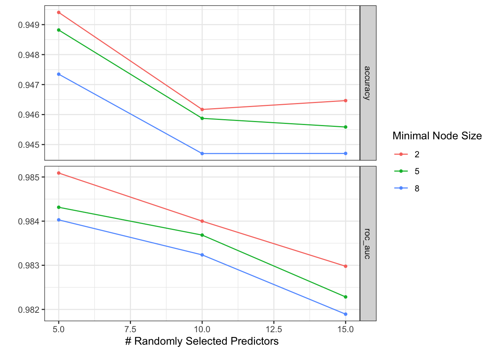
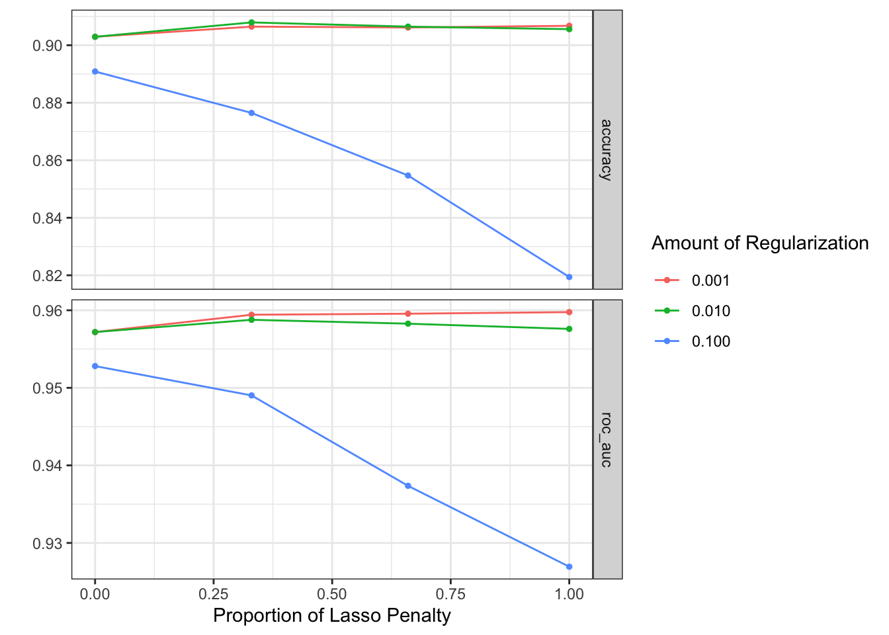
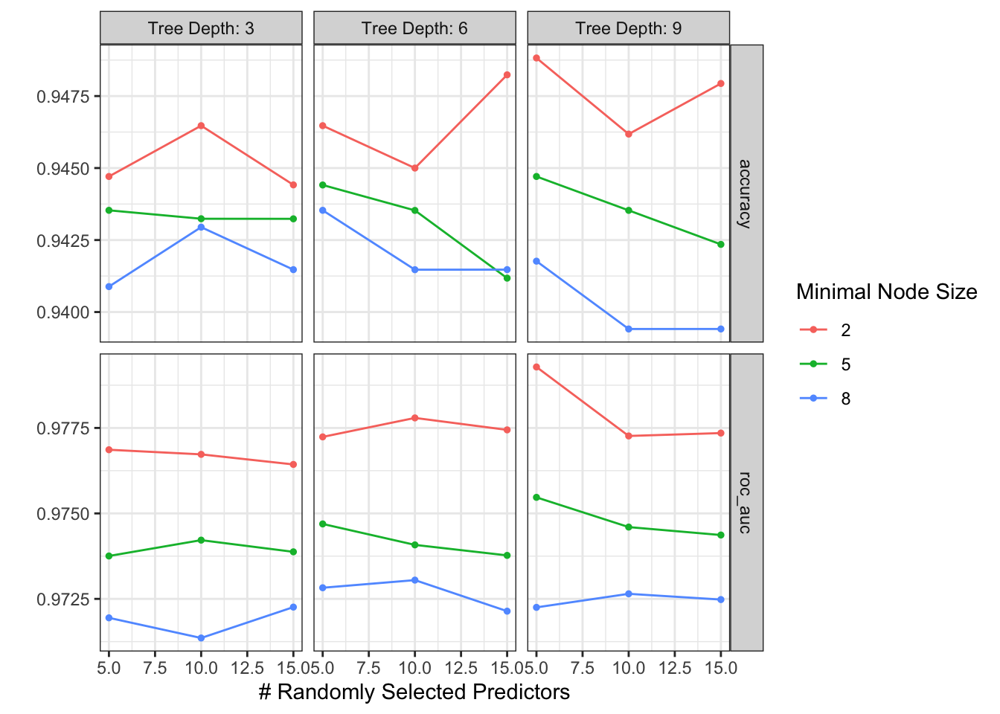

# install.packages("tidyverse","tidymodels", "ranger")
library(tidyverse)
library(tidymodels)
library(ranger) #random forest engine
library(glmnet)
library(xgboost)
theme_set(theme_bw())Supervised machine learning tutorial
Background
First we load packages.
A little about the data:
Tabular data derived from cardiotocography (CTGs) from 2126 pregnant patients.
Outcome: fetal health is normal vs. suspect, or pathological
- Recategorized: normal vs. abnormal (suspect or pathological)


Dataset: Fetal Health Classigication on Kaggle. Images: Thinkstock; geekymedics.com
Read and format the data
dt <- read_csv("fetal_health.csv") |>
mutate(fetal_health = as.factor(ifelse(fetal_health==1,"Normal", "Abnormal")))Rows: 2126 Columns: 22
── Column specification ────────────────────────────────────────────────────────
Delimiter: ","
dbl (22): baseline value, accelerations, fetal_movement, uterine_contraction...
ℹ Use `spec()` to retrieve the full column specification for this data.
ℹ Specify the column types or set `show_col_types = FALSE` to quiet this message.str(dt)tibble [2,126 × 22] (S3: tbl_df/tbl/data.frame)
$ baseline value : num [1:2126] 120 132 133 134 132 134 134 122 122 122 ...
$ accelerations : num [1:2126] 0 0.006 0.003 0.003 0.007 0.001 0.001 0 0 0 ...
$ fetal_movement : num [1:2126] 0 0 0 0 0 0 0 0 0 0 ...
$ uterine_contractions : num [1:2126] 0 0.006 0.008 0.008 0.008 0.01 0.013 0 0.002 0.003 ...
$ light_decelerations : num [1:2126] 0 0.003 0.003 0.003 0 0.009 0.008 0 0 0 ...
$ severe_decelerations : num [1:2126] 0 0 0 0 0 0 0 0 0 0 ...
$ prolongued_decelerations : num [1:2126] 0 0 0 0 0 0.002 0.003 0 0 0 ...
$ abnormal_short_term_variability : num [1:2126] 73 17 16 16 16 26 29 83 84 86 ...
$ mean_value_of_short_term_variability : num [1:2126] 0.5 2.1 2.1 2.4 2.4 5.9 6.3 0.5 0.5 0.3 ...
$ percentage_of_time_with_abnormal_long_term_variability: num [1:2126] 43 0 0 0 0 0 0 6 5 6 ...
$ mean_value_of_long_term_variability : num [1:2126] 2.4 10.4 13.4 23 19.9 0 0 15.6 13.6 10.6 ...
$ histogram_width : num [1:2126] 64 130 130 117 117 150 150 68 68 68 ...
$ histogram_min : num [1:2126] 62 68 68 53 53 50 50 62 62 62 ...
$ histogram_max : num [1:2126] 126 198 198 170 170 200 200 130 130 130 ...
$ histogram_number_of_peaks : num [1:2126] 2 6 5 11 9 5 6 0 0 1 ...
$ histogram_number_of_zeroes : num [1:2126] 0 1 1 0 0 3 3 0 0 0 ...
$ histogram_mode : num [1:2126] 120 141 141 137 137 76 71 122 122 122 ...
$ histogram_mean : num [1:2126] 137 136 135 134 136 107 107 122 122 122 ...
$ histogram_median : num [1:2126] 121 140 138 137 138 107 106 123 123 123 ...
$ histogram_variance : num [1:2126] 73 12 13 13 11 170 215 3 3 1 ...
$ histogram_tendency : num [1:2126] 1 0 0 1 1 0 0 1 1 1 ...
$ fetal_health : Factor w/ 2 levels "Abnormal","Normal": 1 2 2 2 2 1 1 1 1 1 ...#specify a recipe (what are we predicting, what are the features)
ctg_recipe <- recipe(fetal_health~., data=dt)Data splitting
#Split whole data into test and training, stratifying on the outcome
set.seed(456)
ctg_split_strat <- initial_split(dt, prop = 0.8 ,strata = fetal_health)
#Create cross validation folds in test set
set.seed(456)
ctg_folds <- vfold_cv(training(ctg_split_strat),
v=3, #three folds
strata = fetal_health, #stratified on outcome
repeats = 2) #two repeatsModel tuning
Random forest (example from lecture)
#specify random forest model for tuning
rf_tune_spec <- rand_forest(mtry = tune(),
trees = 1000,
min_n = tune(),
mode = "classification")
rf_grid <- grid_regular(
mtry(range = c(5, 15)),#number of predictors sampled at each split of tree
min_n(range = c(2, 8)),#Minimum datapoints in node for further split
levels = 3
)
rf_grid# A tibble: 9 × 2
mtry min_n
<int> <int>
1 5 2
2 10 2
3 15 2
4 5 5
5 10 5
6 15 5
7 5 8
8 10 8
9 15 8set.seed(456)
rf_tune_results <- tune_grid(
rf_tune_spec,
ctg_recipe,
resamples = ctg_folds,
grid = rf_grid
)
autoplot(rf_tune_results)
show_best(rf_tune_results, metric = "roc_auc")# A tibble: 5 × 8
mtry min_n .metric .estimator mean n std_err .config
<int> <int> <chr> <chr> <dbl> <int> <dbl> <chr>
1 5 2 roc_auc binary 0.985 6 0.00182 Preprocessor1_Model1
2 5 5 roc_auc binary 0.984 6 0.00195 Preprocessor1_Model4
3 5 8 roc_auc binary 0.984 6 0.00179 Preprocessor1_Model7
4 10 2 roc_auc binary 0.984 6 0.00185 Preprocessor1_Model2
5 10 5 roc_auc binary 0.984 6 0.00211 Preprocessor1_Model5Elasticnet
https://parsnip.tidymodels.org/reference/logistic_reg.html
It’s just logistic regression but with one or two penalties to prevent overfitting, called regularization. Matters more when more covariates are available. For our problem, we have 21 covariates. However, if we wanted, we could include all pairwise interactions between covariates, increasing the number of covariates to 21 + 210 = 231 covariates, in which case logistic regression may overfit without regularization.
#specify a recipe for all individual variables AND pairwise interaction terms
ctg_recipe_interactions <- ctg_recipe |>
step_interact(terms = ~.:.)
#specify elasticnet model for tuning
en_tune_spec <- logistic_reg(penalty = tune(),
mixture = tune(),
mode = "classification",
engine = "glmnet")
en_grid <- expand_grid(
mixture = c(0, .33, .66, 1), #1 = lasso model, 0=ridge model
penalty = c(0.1, 0.01, 0.001) #size of penalty
)
en_grid# A tibble: 12 × 2
mixture penalty
<dbl> <dbl>
1 0 0.1
2 0 0.01
3 0 0.001
4 0.33 0.1
5 0.33 0.01
6 0.33 0.001
7 0.66 0.1
8 0.66 0.01
9 0.66 0.001
10 1 0.1
11 1 0.01
12 1 0.001set.seed(456)
en_tune_results <- tune_grid(
en_tune_spec,
ctg_recipe,
resamples = ctg_folds,
grid = en_grid
)
autoplot(en_tune_results)
show_best(en_tune_results, metric = "roc_auc")# A tibble: 5 × 8
penalty mixture .metric .estimator mean n std_err .config
<dbl> <dbl> <chr> <chr> <dbl> <int> <dbl> <chr>
1 0.001 1 roc_auc binary 0.960 6 0.000910 Preprocessor1_Model10
2 0.001 0.66 roc_auc binary 0.960 6 0.000789 Preprocessor1_Model07
3 0.001 0.33 roc_auc binary 0.959 6 0.000755 Preprocessor1_Model04
4 0.01 0.33 roc_auc binary 0.959 6 0.00147 Preprocessor1_Model05
5 0.01 0.66 roc_auc binary 0.958 6 0.00176 Preprocessor1_Model08Gradient boosted machines
Like random forest, it’s an ensemble of trees.
https://parsnip.tidymodels.org/reference/boost_tree.html
#specify random forest model for tuning
gbm_tune_spec <- boost_tree(mtry = tune(),
trees = 1000,
min_n = tune(),
tree_depth = tune(),
stop_iter = 3,
mode = "classification")
gbm_grid <- grid_regular(
mtry(range = c(5, 15)),#number of predictors sampled at each split of tree
min_n(range = c(2, 8)),
tree_depth(range = c(3, 9)),
levels = 3
)
gbm_grid# A tibble: 27 × 3
mtry min_n tree_depth
<int> <int> <int>
1 5 2 3
2 10 2 3
3 15 2 3
4 5 5 3
5 10 5 3
6 15 5 3
7 5 8 3
8 10 8 3
9 15 8 3
10 5 2 6
# … with 17 more rowsset.seed(456)
gbm_tune_results <- tune_grid(
gbm_tune_spec,
ctg_recipe,
resamples = ctg_folds,
grid = gbm_grid
)
autoplot(gbm_tune_results)
show_best(gbm_tune_results, metric = "roc_auc")# A tibble: 5 × 9
mtry min_n tree_depth .metric .estimator mean n std_err .config
<int> <int> <int> <chr> <chr> <dbl> <int> <dbl> <chr>
1 5 2 9 roc_auc binary 0.979 6 0.00225 Preprocessor1_M…
2 10 2 6 roc_auc binary 0.978 6 0.00261 Preprocessor1_M…
3 15 2 6 roc_auc binary 0.977 6 0.00258 Preprocessor1_M…
4 15 2 9 roc_auc binary 0.977 6 0.00283 Preprocessor1_M…
5 10 2 9 roc_auc binary 0.977 6 0.00262 Preprocessor1_M…Model selection
Show top performance across all 3 algorithms
show_best(rf_tune_results)Warning: No value of `metric` was given; metric 'roc_auc' will be used.# A tibble: 5 × 8
mtry min_n .metric .estimator mean n std_err .config
<int> <int> <chr> <chr> <dbl> <int> <dbl> <chr>
1 5 2 roc_auc binary 0.985 6 0.00182 Preprocessor1_Model1
2 5 5 roc_auc binary 0.984 6 0.00195 Preprocessor1_Model4
3 5 8 roc_auc binary 0.984 6 0.00179 Preprocessor1_Model7
4 10 2 roc_auc binary 0.984 6 0.00185 Preprocessor1_Model2
5 10 5 roc_auc binary 0.984 6 0.00211 Preprocessor1_Model5show_best(en_tune_results)Warning: No value of `metric` was given; metric 'roc_auc' will be used.# A tibble: 5 × 8
penalty mixture .metric .estimator mean n std_err .config
<dbl> <dbl> <chr> <chr> <dbl> <int> <dbl> <chr>
1 0.001 1 roc_auc binary 0.960 6 0.000910 Preprocessor1_Model10
2 0.001 0.66 roc_auc binary 0.960 6 0.000789 Preprocessor1_Model07
3 0.001 0.33 roc_auc binary 0.959 6 0.000755 Preprocessor1_Model04
4 0.01 0.33 roc_auc binary 0.959 6 0.00147 Preprocessor1_Model05
5 0.01 0.66 roc_auc binary 0.958 6 0.00176 Preprocessor1_Model08show_best(gbm_tune_results)Warning: No value of `metric` was given; metric 'roc_auc' will be used.# A tibble: 5 × 9
mtry min_n tree_depth .metric .estimator mean n std_err .config
<int> <int> <int> <chr> <chr> <dbl> <int> <dbl> <chr>
1 5 2 9 roc_auc binary 0.979 6 0.00225 Preprocessor1_M…
2 10 2 6 roc_auc binary 0.978 6 0.00261 Preprocessor1_M…
3 15 2 6 roc_auc binary 0.977 6 0.00258 Preprocessor1_M…
4 15 2 9 roc_auc binary 0.977 6 0.00283 Preprocessor1_M…
5 10 2 9 roc_auc binary 0.977 6 0.00262 Preprocessor1_M…Train top model on full data
best_auc <- select_best(rf_tune_results, metric = "roc_auc")
#Specify a model with best hyperparameters
rf_best_spec <- rand_forest(mtry = best_auc$mtry,
trees = 1000,
min_n = best_auc$min_n,
mode = "classification") |>
set_engine("ranger", importance = "impurity")
#Trains top configuration on all training set; predict on test set
rf_test_results <- last_fit(
rf_best_spec,
ctg_recipe,
split = ctg_split_strat)Unbiased performance of top model
#Estiamte unbiased performance on test set
rf_test_results %>% collect_metrics()# A tibble: 2 × 4
.metric .estimator .estimate .config
<chr> <chr> <dbl> <chr>
1 accuracy binary 0.951 Preprocessor1_Model1
2 roc_auc binary 0.992 Preprocessor1_Model1# Compare predicted risk to actual outcome
preds <- predict(extract_workflow(rf_test_results), testing(ctg_split_strat), type="prob")
dt_pred_outcome <- cbind(preds,
truth =testing(ctg_split_strat)$fetal_health)
head(dt_pred_outcome,5) .pred_Abnormal .pred_Normal truth
1 0.7490 0.2510 Abnormal
2 0.0035 0.9965 Normal
3 0.0025 0.9975 Normal
4 0.9930 0.0070 Abnormal
5 0.0500 0.9500 Normalroc <- roc_curve(dt_pred_outcome,
truth,
.pred_Abnormal)Warning: Returning more (or less) than 1 row per `summarise()` group was deprecated in
dplyr 1.1.0.
ℹ Please use `reframe()` instead.
ℹ When switching from `summarise()` to `reframe()`, remember that `reframe()`
always returns an ungrouped data frame and adjust accordingly.
ℹ The deprecated feature was likely used in the yardstick package.
Please report the issue at <]8;;https://github.com/tidymodels/yardstick/issueshttps://github.com/tidymodels/yardstick/issues]8;;>.head(roc, 5)# A tibble: 5 × 3
.threshold specificity sensitivity
<dbl> <dbl> <dbl>
1 -Inf 0 1
2 0 0 1
3 0.0005 0.208 1
4 0.001 0.230 1
5 0.0015 0.320 1autoplot(roc)